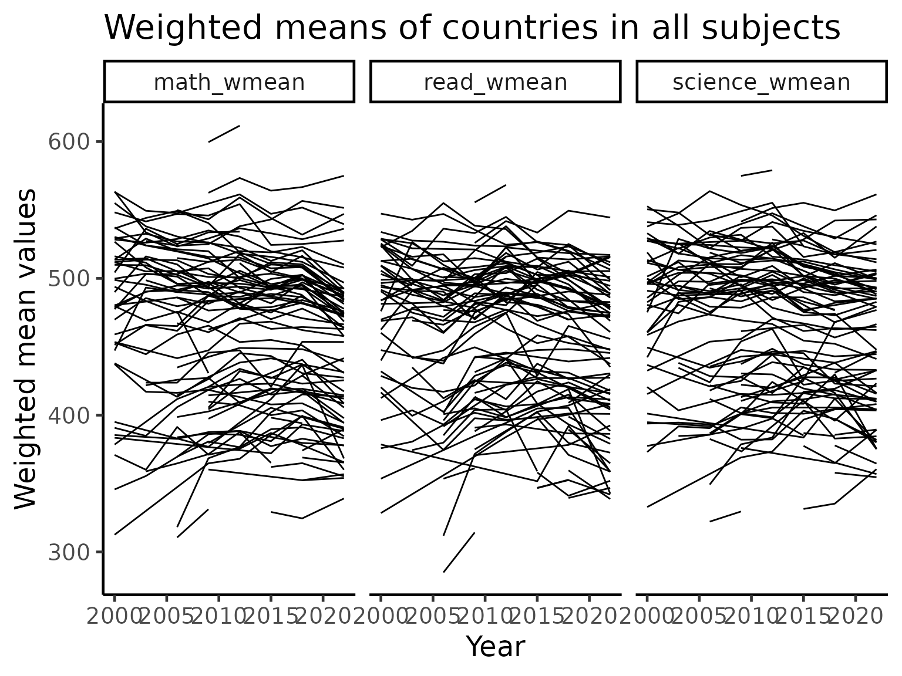
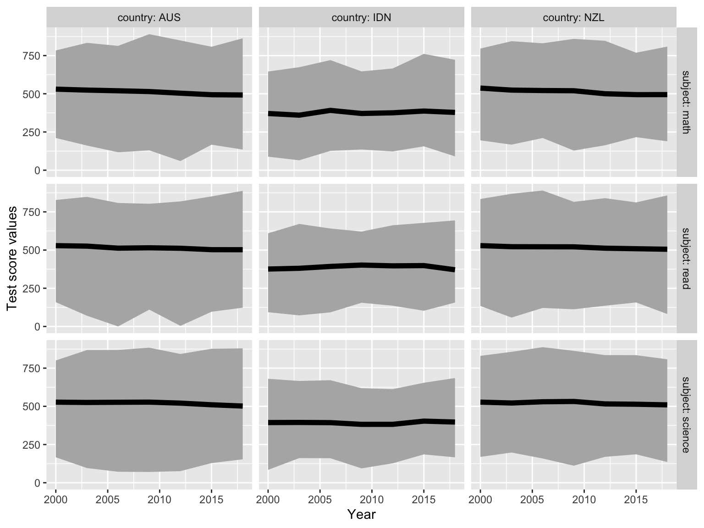

exploring_time.Rmdstudent_sumry <- student %>% filter(country %in% c("AUS", "NZL", "IDN")) %>% group_by(year, country) %>% summarise(math_mean = weighted.mean(math, stu_wgt, na.rm=TRUE), read_mean = weighted.mean(read, stu_wgt, na.rm=TRUE), science_mean = weighted.mean(science, stu_wgt, na.rm=TRUE), math_max = max(math, na.rm=TRUE), read_max = max(read, na.rm=TRUE), science_max = max(science, na.rm=TRUE), math_min = min(math, na.rm=TRUE), read_min = min(read, na.rm=TRUE), science_min = min(science, na.rm=TRUE)) %>% mutate(country=factor(country, levels=c("AUS", "NZL", "IDN"))) p1 <- ggplot(student_sumry, aes(group = country)) + geom_ribbon(aes(x=year, ymin=math_min, ymax=math_max), fill="grey70") + geom_line(aes(x=year, y=math_mean), colour="black", size=2) + facet_wrap(~country) + ylim(c(0,1000)) + ylab("math") p2 <- ggplot(student_sumry, aes(group = country)) + geom_ribbon(aes(x=year, ymin=science_min, ymax=science_max), fill="grey70") + geom_line(aes(x=year, group = country, y=science_mean), colour="black", size=2) + facet_wrap(~country) + ylim(c(0,1000)) + ylab("science") p3 <- ggplot(student_sumry, aes(group = country)) + geom_ribbon(aes(x=year, ymin=read_min, ymax=read_max), fill="grey70") + geom_line(aes(x=year, group = country, y=read_mean), colour="black", size=2) + facet_wrap(~country) + ylim(c(0,1000)) + ylab("read") p1 / p2 / p3

student %>% group_by(year, country) %>% summarise(math = weighted.mean(math, stu_wgt, na.rm=TRUE)) %>% ggplot() + geom_line(aes(x=year, y=math, group=country)) + ylim(c(250,800))

# Uncomment this to make interactive #library(plotly) #ggplotly()
Here we want to calculate features for all the countries over time, and explore the variability by country.
# devtools::install_github("njtierney/brolgar") library(brolgar) library(tsibble) student_means <- student %>% group_by(year, country) %>% summarise(math = weighted.mean(math, stu_wgt, na.rm=TRUE)) %>% ungroup() student_means <- as_tsibble(student_means %>% mutate(year = year %>% as.character %>% as.integer), key = country, index = year) stu_features <- student_means %>% features(math, feat_brolgar) stu_features stu_monotone = student_means %>% features(math, feat_monotonic) p1 = stu_monotone %>% right_join(student_means, by = "country") %>% ggplot(aes(x = year, y = math, group = country)) + geom_line() + gghighlight::gghighlight(increase) + labs(x = "Year", y = "Weighted mean Maths scores", title = "Highlight monotone increasing countries") p2 = stu_monotone %>% right_join(student_means, by = "country") %>% ggplot(aes(x = year, y = math, group = country)) + geom_line() + gghighlight::gghighlight(decrease) + labs(x = "Year", y = "Weighted mean Maths scores", title = "Highlight monotone decreasing countries") p1 / p2
student %>% filter(country %in% c("AUS", "CAN")) %>% group_by(year, country) %>% summarise(math_mean = weighted.mean(math, stu_wgt, na.rm=TRUE), read_mean = weighted.mean(read, stu_wgt, na.rm=TRUE)) %>% ggplot(aes(x = math_mean, y = read_mean, colour = country)) + geom_point() + geom_text(aes(label = year))